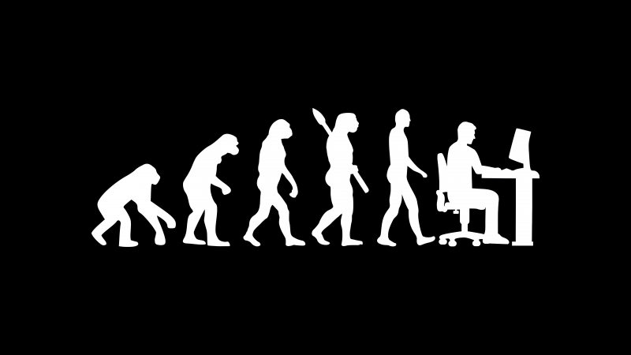
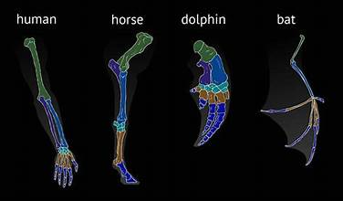

Macroevolution describes evolution on a grand scale, encompassing the origin, diversification, and extinction of species and higher taxonomic groups over long periods. These patterns illustrate how life has branched, diversified, and adapted across Earth's history.
Concept: The process where two or more species, originating from a common ancestor, gradually accumulate differences over time, often leading to the formation of new species.
Mechanism: Occurs when populations are exposed to different selective pressures, leading to adaptations to distinct environments or ecological niches. Geographic isolation often plays a key role initially.
Outcome: Increases biodiversity. Leads to the development of homologous structures (explained below).
Example: The Galapagos finches. All descended from a single ancestral finch species but diversified into many species with different beak shapes, each adapted to distinct food sources on different islands.
Concept: The complete disappearance of an entire species (or other taxonomic group) from Earth.
Mechanism: Occurs when a species is unable to adapt to environmental changes (e.g., climate change, habitat loss, new predators/diseases, competition) or when its reproductive rate falls below its death rate.
Role in Evolution: While seemingly negative, extinction is a natural and crucial part of evolution. It clears ecological niches, allowing surviving species to diversify and new species to emerge through adaptive radiation.
Example: The extinction of dinosaurs (except birds) 66 million years ago cleared niches that allowed mammals to diversify rapidly.
Concept: A process where a single ancestral species rapidly diversifies into a multitude of new species, each adapted to exploit a different ecological niche or habitat. It's a specific and rapid form of divergent evolution.
Triggers: Often occurs when:
Outcome: Leads to significant increases in biodiversity in a relatively short geological time frame.
Example:
Concept: The process where unrelated species (without a recent common ancestor) evolve similar traits or features independently, usually in response to similar environmental challenges or selective pressures.
Mechanism: Different species face similar problems or opportunities in their environments, leading to the selection of similar adaptive solutions.
Outcome: Leads to the development of analogous structures (explained below).
Example:
Concept: Anatomical structures in different species that are similar in structure and embryonic origin because they were inherited from a common ancestor, even if their current functions are different.
Relationship to Evolution: Strong evidence for divergent evolution and common ancestry.
Example: The forelimbs of vertebrates (e.g., a human arm, a bat wing, a whale flipper, a cat leg). They all share the same basic bone arrangement (humerus, radius, ulna, carpals, metacarpals, phalanges), despite being used for different purposes (grasping, flying, swimming, walking).
Concept: Anatomical structures in different species that have a similar function but have different evolutionary origins and often different underlying structures.
Relationship to Evolution: Evidence for convergent evolution. They arise when unrelated species face similar selective pressures.
Example:
Written by Kasiban Parthipan